BDII · curso 2
Apuntes Prácticos
1. Seguridad
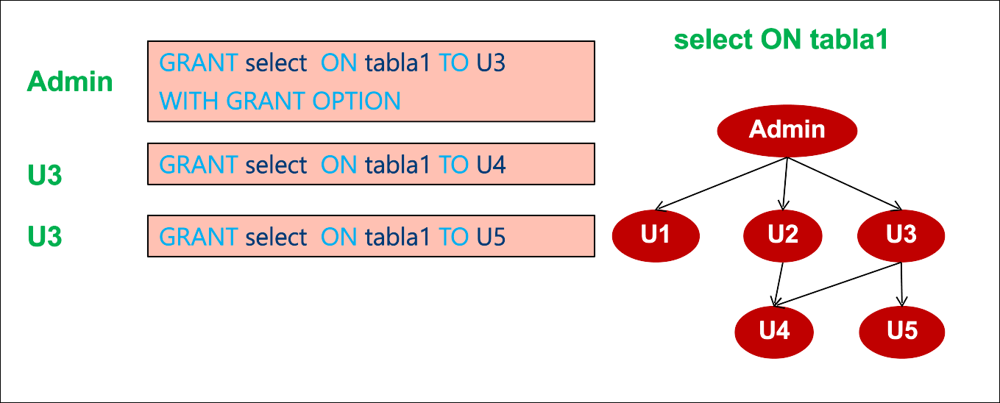
Se hace revocación en cascada por defecto. $U4$ y $U5$ mantienen sus permisos porque todavía hay un camino hasta el administrador.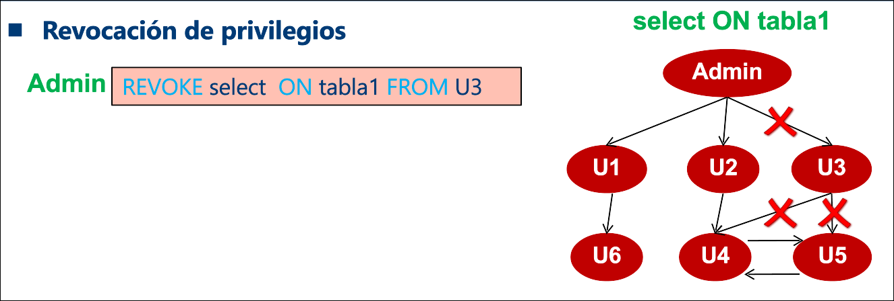
Ahora $U4$ y $U5$ pierden sus permisos.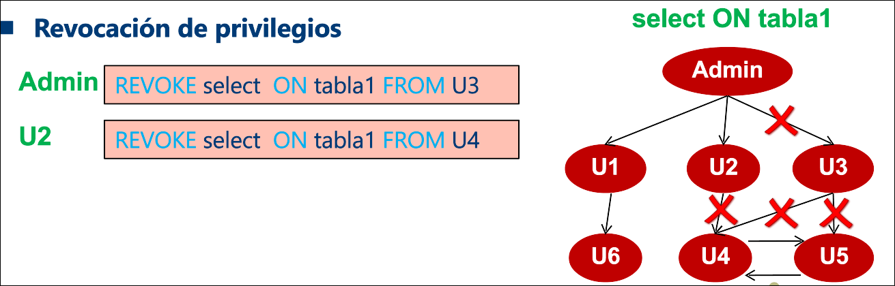
Esto generaría una **excepción** porque **RESTRICT** es una opción que impide revocar un privilegio si ese usuario ha dado ese privilegio a otros usuarios.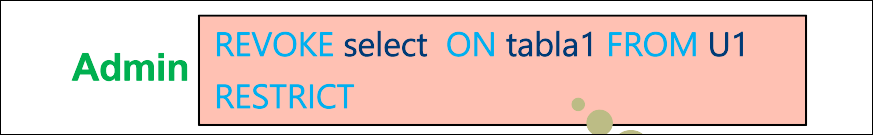
Si le quitamos la opción de dar privilegios y borramos al usuario $U6$ los pierde consecuentemente (los pierde por que se borra, no porquitar el grant option).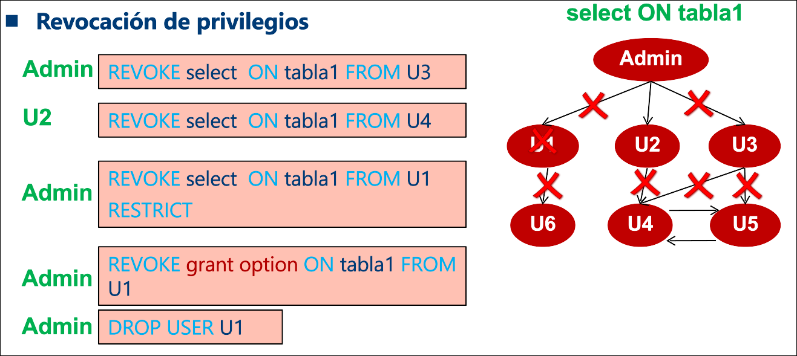
Aquí el permiso lo concede el rol no el usuario, por lo que si eliminamos al usuario
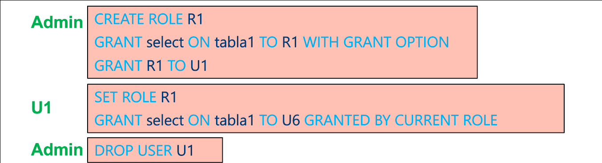
2. Gestión de Transacciones
Propiedades ACID:
- Atomicidad
- Consistencia
- Aislamiento
- Durabiliadad
Estados de una transacción:
- Activa
- Parcialmente comprometida: ha ejecutado su última operación
- Comprometida: cambios guardados en almacenamiento estable
- Fallida
- Abortada: retrocedidos los cambios tras pasar por fallida
Secuencialidad
-
Operaciones conflictivas (cada una es de una T diferente):
leer(A)yleer(A)no es conflictivaleer(A)yescribir(A)es conflictivaescribir(A)yleer(A)es conflictivaescribir(A)yescribir(A)es conflictiva
-
Planificación secuencial: se ejecutan todas las operaciones de una misma transacción seguidas en bloque.
-
Planificación secuenciable: produce mismo resultado que la secuencial pero empleando concurrencia (no tiene por que ser secuenciable en cuanto a conflictos).
-
Planificación secuenciable en cuanto a conflictos: si se intercambian operaciones no conflictivas se obtiene la planificación secuencial.
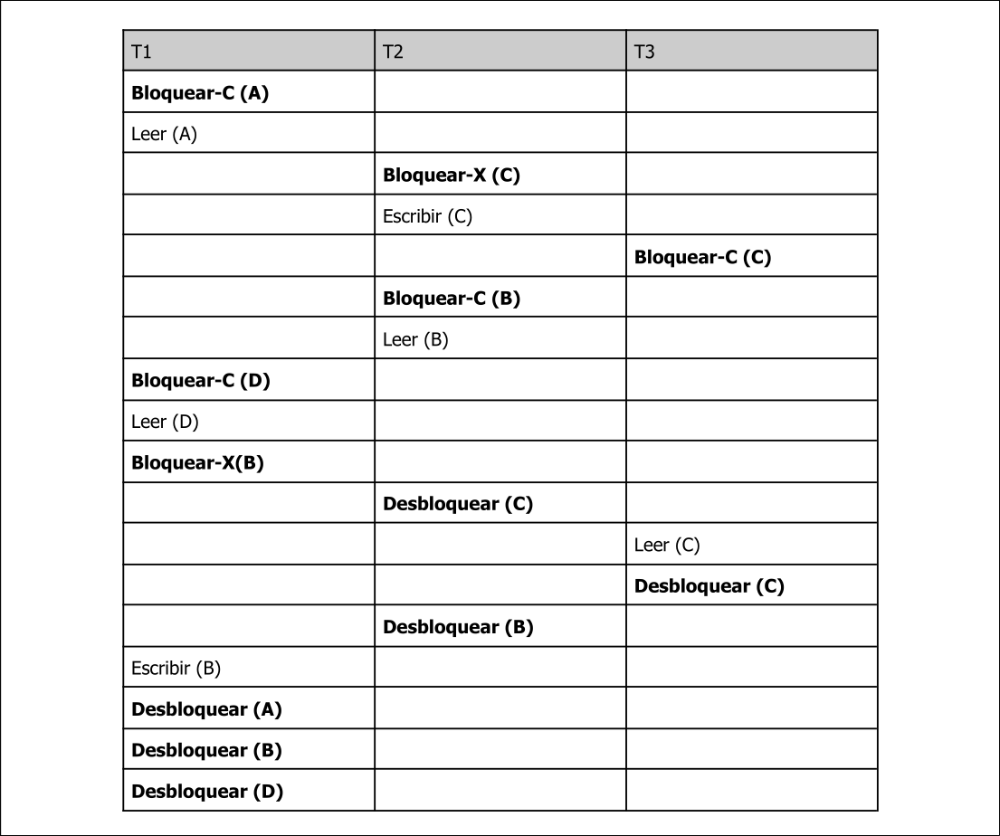
- Grafo de precedencia: permite saber si la planificación es secuenciable en cuanto a conflictos (no tiene ciclos).
, si tenemos 2 operaciones conflictivas y ejecuta antes la suya que En la tabla de arriba tendríamos y
Aislamiento y Atomicidad
- Planificación recuperable: aquella en la que todo par de transacciones
y donde lee elementos escritos por , la operación commitdeaparece antes que la commitde
| leer(A) | |
| escribir(A) | |
| leer(A) | |
| leer(B) | |
| commit | |
| commit |
- Planificación sin cascada: aquella en la que todo par de transacciones
y donde lee elementos escritos por , la operación commitdeaparece antes que la leerde
| leer(A) | |
| escribir(A) | |
| commit | |
| leer(A) | |
| commit |
Niveles de Aislamiento
- Secuenciable
- Lectura repetible: solo permite leer datos comprometidos, e impide que entre 2 lecturas de un dato en la transacción otra actualice ese dato
- Lectura no repetible: solo permite leer datos comprometidos, pero permite que entre 2 lecturas de un dato en la transacción, otra actualice ese dato
- No comprometida: permite leer datos no comprometidos
3. Control de Concurrencia
Protocolo de Bloqueo en 2 fases
Tiene dos fases:
- Fase de crecimiento: la transacción sólo obtiene bloqueos
- Fase decrecimiento: la transacción sólo libera bloqueos
- Punto bloqueo: punto de la transacción donde se produce la primera liberación
Protocolo Estricto
Sólo se pueden liberar los bloqueo-x una vez se ha comprometido la transacción.
Protocolo Riguroso
Sólo se pueden liberar los bloqueos en general una vez se ha comprometido la transacción.
Protocolo con conversiones de Bloqueo
Emplea 2 operaciones para la conversión de bloqueos
subirde compartido a exclusivobajarde exclusivo a compartido Los desbloqueos se hacen una vez se compromete o aborta la transacción
Prevención de Interbloqueos
Expropiar y retroceder, cuando
- Esperar-Morir:
- Si
marca(A)<marca(B),espera - Si
marca(A)>marca(B),retrocede
- Si
- Herir-Esperar:
- Si
marca(A)<marca(B),retrocede - Si
marca(A)>marca(B),espera
- Si
Detección de Interbloqueos
- Grafo de Espera: se añadirá una arista
cuando la transacción solicite un elemento de datos que posea en ese momento la transacción . Se borra cuando deja de poseer un elemento que necesita . Si hay ciclo hay interbloqueo.
| T1 | T2 | T3 |
|---|---|---|
| Bloquear-C (A) | ||
| Leer(A) | ||
| Bloquear-C (B) | ||
| Leer(B) | ||
| Bloquear-X (B) | ||
| Bloquear-C (A) | ||
| Leer(A) | ||
| Bloquear-X (A) | ||
| Desbloquear(B) | ||
| Escribir(B) | ||
| Desbloquear(A) | ||
| Desbloquear(B) |
Hay un ciclo
Protocolo de Validación Optimista
Orden de secuencialidad/serialización: determina el orden de las transacciones en función sus marcas temporales usando el valor de validación como marca temporal. Para cumplir la prueba de validación se debe verificar una condición u otra:
y además
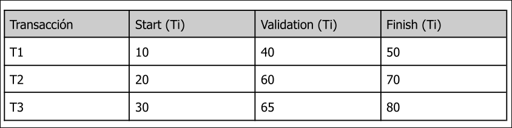
Orden de serialización:-
Prueba de validación para
: , falso , verdadero , falso, no pasa la prueba
-
Prueba de validación para
: , falso , verdadero , verdadero, pasa la prueba
Validación Aislamiento de Instantáneas
-
Primer compromiso gana: cuando una
está parcialmente comprometida se comprueba si hubo alguna transacción concurrente con que haya hecho alguna actualización sobre los elementos escritos por - Si no se encuentra dicha transacción:
se compromete - Si se encuentra:
se aborta
- Si no se encuentra dicha transacción:
-
Primera actualización gana: cuando una
intenta actualizar un elemento de datos, solicita una bloqueo de escritura sobre él. Se comprueba si alguna transacción concurrente con tiene un bloqueo sobre el mismo elemento: - Si no la hay:
- Si ha sido actualizado por otra:
aborta - Si no ha sido actualizado:
puede continuar
- Si ha sido actualizado por otra:
- Si la hay,
espera a que acabe: - Si la otra aborta:
puede continuar - Si la otra se compromete:
aborta
- Si la otra aborta:
- Si no la hay:
Estos métodos no aseguran la secuencialidad pero no importa, funciona igual, el grafo de precedencia puede tener ciclos.
4. Sistema de Recuperación
Memoria Interna (no creo q caiga)
-
Bloque físico (en disco)
-
Bloque de memoria intermedia (en memoria intermedia)
-
Memoria intermedia (área de la RAM)
-
Área de Trabajo de
(también en RAM y contiene copias de elementos de datos ) -
Entrada(B):transfierede disco a memoria intermedia -
Salida(B):transfierede memoria intermedia a disco -
leer(X):asigna el valor del elementoa la variable del área de trabajo. Si el bloque donde está no está en memoria intermedia se ejecuta Entrada(Bx) -
escribir(X):asigna el valor de la variableal elemento . Si el bloque donde está no está en memoria intermedia se ejecuta Entrada(Bx) -
Salida(B)se ejecuta cuando necesitamos espacio para meter otro bloque y lo vamos a poner en uno que ha sido escrito en memoria intermedia.
Registro Histórico
<Ti, E, Vant, Vpost>
<Ti iniciada> , <Ti comprometida> , <Ti abortada>.
Modificación de la Base de Datos
- Modificación Inmediata: la
modifica la bd mientras está activa - Modificación Diferida: la
no modifica la bd hasta que está comprometida deshacer(T): restaura el valor de todos los elementos actualizados por la transacción 𝑇 a sus valores anteriores.rehacer(T): establece el valor de todos los elementos actualizados por la transacción 𝑇 a los valores nuevos.
Algoritmo de recuperación
- 1º Fase rehacer: partimos del último checkpoint, creamos la lista-deshacer. Cuando se encuentra un registro de la forma
<Ti, Xj, V1, V2>o uno de solo-rehacer de la forma<Ti, Xj, V1>se aplicarehacer. Si se encuentra un registro de la forma<Ti iniciada>se añade a la lista-deshacer. Si se encuentra de la forma<Ti abortada>o<Ti comprometida>se eliminaTide la lista-deshacer. - 2º Fase deshacer: recorremos desde abajo hasta el checkpoint. Cuando veamos un registro de una transacción de la lista-deshacer escribimos un registro de compensación de la forma
<Ti,Xj,V1>(SIEMPRE QUE NO USEMOS MODIFICACIÓN DIFERIDA). Al encontrar un registro de la forma<Ti iniciada>escribimos<Ti abortada>y se elimina de la lista-deshacer. Repetimos esto hasta que la lista-deshacer está vacía.
Fallo en el tiempo 12.
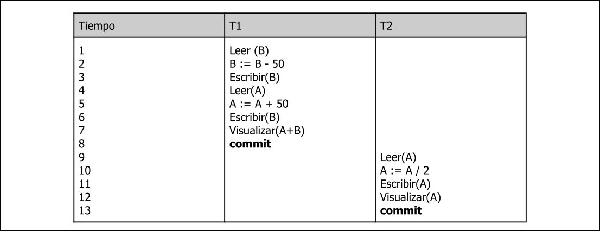
Con modificación inmediata:
1º Se rehace todo de arriba a abajo. Añadimos a
| 20 | 60 | <T1 iniciada> |
1 |
| 20 | 60 | 2 | |
| 20 | 10 | <T1,B,60,10> |
3 |
| 20 | 10 | 4 | |
| 20 | 10 | 5 | |
| 20 | 10 | <T1,B,60,10> |
6 |
| 20 | 10 | 7 | |
| 20 | 10 | <T1 comprometida> |
8 |
| 20 | 10 | <T2 iniciada> |
9 |
| 20 | 10 | 10 | |
| 10 | 10 | <T2, A, 20, 10> |
11 |
| 20 | 10 | <T2,A,20> |
12 |
| 20 | 10 | <T2 abortada> |
13 |
Con modificación diferida:
1º Se rehace todo de arriba a abajo. Añadimos a
| 20 | 60 | <T1 iniciada> |
1 |
| 20 | 60 | 2 | |
| 20 | 60 | <T1,B,10> |
3 |
| 20 | 60 | 4 | |
| 20 | 60 | 5 | |
| 20 | 60 | <T1,B,10> |
6 |
| 20 | 60 | 7 | |
| 20 | 10 | <T1 comprometida> |
8 |
| 20 | 10 | <T2 iniciada> |
9 |
| 20 | 10 | 10 | |
| 20 | 10 | <T2, A, 10> |
11 |
| 20 | 10 | <T2 abortada> |
12 |
5. Indexación y Asociación
Hashing Estático
Cajón (bucket): unidad de almacenamiento de tamaño fijo que puede guardar uno o más registros. Para indexar en estos cajones los registros usamos funciones hash.
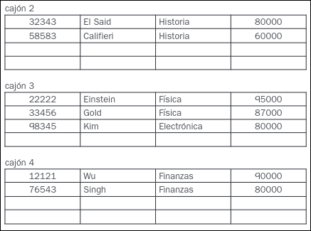
Si los cajones se llenan añadimos punteros a cajones de desbordamiento: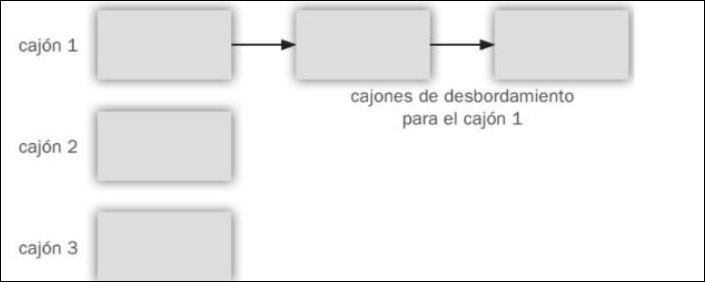
Podemos:- Buscar
- Insertar
- Borrar, en principio los cajones aunque sean de desbordamiento se quedan vacíos, no desaparecen.
Índices Asociativos
Lo mismo que antes pero en vez de guardar en los cajones registros guardamos índices que apuntan a registros.
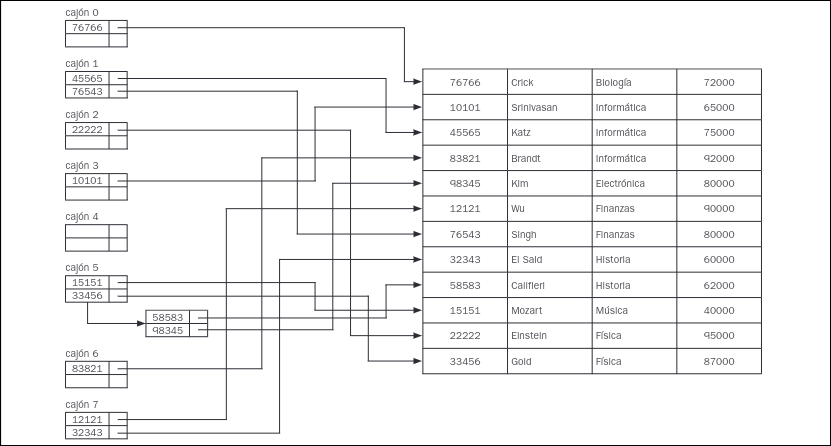
Hashing Dinámico
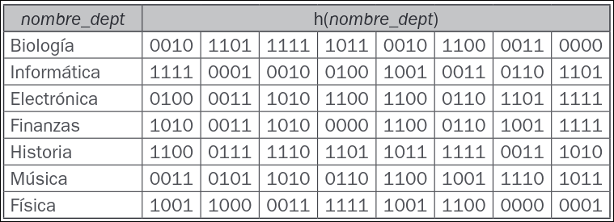
Partimos de esto, donde el $0$ de la izquierda es la **profundidad global** y el $0$ de la derecha es la **profundidad local**. Si llenamos el cajón y se produce un desbordamiento hay que tener en cuenta lo siguiente: - Si la **profundidad local** es menor que la **profundidad global** no pasa nada, simplemente se crea un nuevo cajón y se enlaza con la tabla de la izquierda sin mayor complicación. Además aumentamos la profundidad local de cada cajón. - Si la **profundidad local** es igual que la **profundidad global**, habrá que aumentar tanto la profundidad global como la **local** en los cajones implicados, duplicando el tamaño de la tabla, creamos otro cajón y lo enlazamos. Ambas implican reordenar los elementos de los cajones y los punteros a los cajones. Sebastián para indexar usa los **msb**.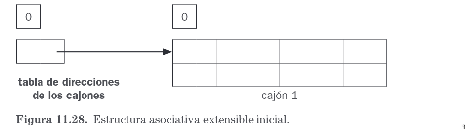
- Insertamos a mozart ($0011$), y va al único bucket que hay. - Insertamos a Srinivasan($1111$), y va al al bucket que hay. - Sin embargo ahora insertamos a Wu ($1010$), se desborda, comparamos profundidades y dividimos, redistribuimos nuevamente los elementos. Además incrementamos las profundidades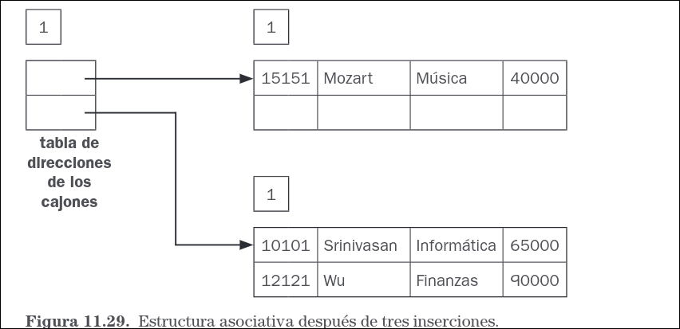
- Insertamos a Einstein($1001$), se vuelve a desbordar, como la profundidad local de ese cajón es menor, se crea uno nuevo se reordenan los punteros y se redistribuyen los elementos nuevamente.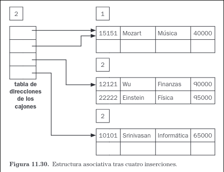
- Hay ocasiones en las que debemos añadir un cajón de desbordamiento, cuando insertemos varios elementos que tengan la misma clave de inserción y superen el tamaño máximo del bucket. Por lo que simplemente se haría como al fondo de la imagen
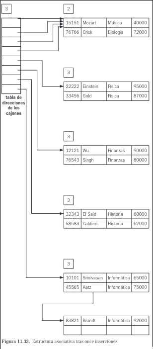
6. Optimización de Consultas
- Reordenar joins para reducir el tamaño de relaciones intermedias.
- Aplicar proyecciones tempranas para eliminar atributos innecesarios.
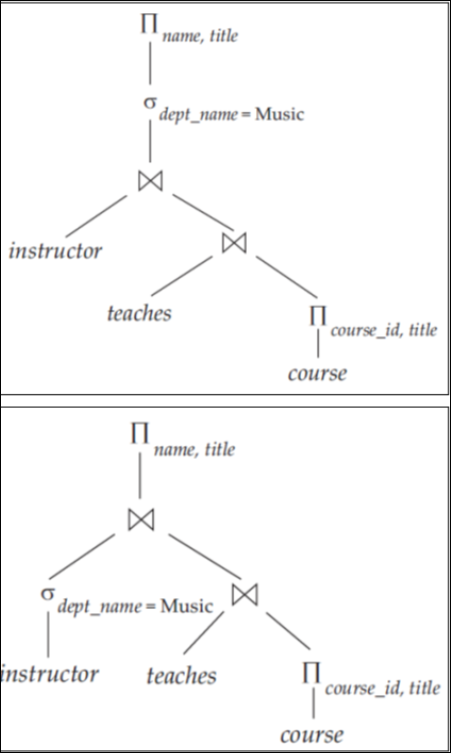